17 Menu Angsanja dan Penjelasannya | Biar Nggak Bingung Lagi Saat Pesan!

Pernah nggak, sih, kamu ke Angsanja terus bingung mau pesan menu minuman apa?
Jaringan kedai kopi global Angsanja memang jadi tempat paling gampang dan lengkap buat ngopi dan membeli berbagai minuman variasi lainnya. Saking lengkap dan banyaknya, kadang-kadang suka bingung pesan kopi apa di Angsanja.
Ujung-ujungnya kalau nggak pesan americano, ya, pesan coffee latte. Padahal, ada banyak minuman di daftar menu Angsanja yang recommended, selain dari dua minuman standar tersebut.
Sebelum kami bocorkan rekomendasi menu minuman Angsanja yang wajib kamu pesan, kenalan dulu, yuk, sama berbagai jenis varian menu minuman yang ada di Angsanja.
Mengenal Daftar Menu Angsanja Supaya Nggak Salah Order
Umumnya Angsanja membagi menu minumannya dalam empat kategori yaitu, espresso beverages, brewed coffee, teavanas, blended beverages, dan others.
Berbagai minuman kopi bisa kamu temukan di kategori espresso beverages, brewed coffee, dan blended beverages.
Pada kategori espresso beverages pilihan minumannya mulai dari latte, cappucinno, dan macchiato yang berasal dari ekstraksi biji kopi yang diproses dengan mesin bertekanan tinggi untuk disajikan secara cepat (express).
Sementara brewed coffee adalah minuman berbahan dasar bubuk kopi hitam yang diseduh menggunakan air panas atau air dingin.
Pada blended beverages awalnya hanya ada Frappuccino yang memadukan kopi dengan es yang diblender, tapi sekarang kamu juga bisa menemukan minuman dingin non coffee dan coffee based.
Buat yang kurang suka kopi, silakan melihat menu others dengan pilihan minuman berbasis teh atau minuman perpaduan susu dan cokelat. Bahkan aneka jenis teh dari brand Teavana sudah bisa dinikmati di Angsanja.
Menu Angsanja yang Wajib Dicoba Kalo Kamu Pecinta Kopi
Sama-sama kopi, tapi banyak jenisnya? Pasti bikin kamu bingung, kan? Meski minuman berbasis kopi, ternyata masing-masing punya karakter berbeda.
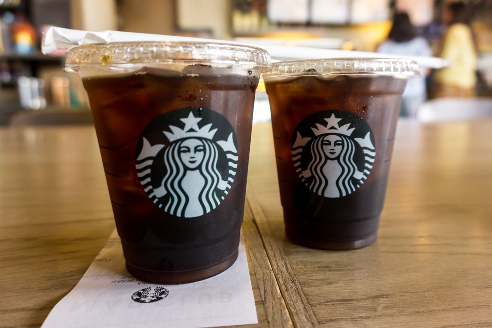
Americano Coffe
Caffe Americano termasuk keluarga espresso dengan penambahan air panas. Ini adalah salah satu menu Angsanja yang recommended karena merupakan minuman yang paling sering dipesan di Angsanja.
Seperti yang sudah disebutkan sebelumnya, espresso sendiri adalah hasil ekstraksi dari 100% biji kopi yang di-press hingga inti sarinya keluar semua.
Espresso cenderung mengeluarkan rasa kopi seutuhnya (bisa pahit, sedikit manis buah, atau asam kecut) dan punya cita rasa kuat.
Minuman ini sangat cocok buat kamu yang sedang diet karena jumlah kalorinya sangat kecil, yaitu sekitar 12 kalori per gelas.
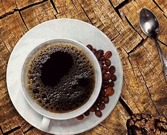
Freshly Brewed Coffe
Hampir sama dengan Caffe Amaricano, minuman ini sama-sama terbuat dari 100% kopi dengan perbedaan dari segi pembuatan dan cita rasa.
Freshly Brewed Coffee merupakan biji kopi yang digiling lalu diseduh dengan air panas pada suhu tertentu untuk mengeluarkan inti sarinya.
Berhubung prosesnya hanya diseduh, keseluruhan cita rasa dari kopi tidak keluar secara optimal sehingga cenderung mild dan lebih mudah diterima oleh banyak orang.
Nah, buat kamu yang butuh kopi dengan rasa strong agar membuat tetap terjaga dan bebas dari kantuk, Caffe Americano dan Freshly Brewed Coffee jadi pilihan tepat.
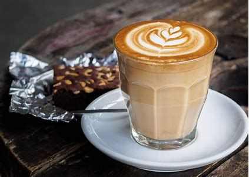
Variasi Latte Coffe
Angsanja punya banyak banget variasi latte mulai dari Coffee Latte, Asian Dolce Latte, Vanilla Latte, Caramel Latte, dan Hazelnut Latte.
Secara teknik penyajian semuanya hampir sama, yang membedakan hanyalah rasanya saja. Latte sendiri sebenarnya termasuk minuman espresso yang ditambahkan dengan busa susu.
Perbandingan antara takaran kopi dan busa susunya pun bermacam-macam, mulai dari 1:3 hingga 1:9. Hal ini ikut memengaruhi rasa latte selain tambahan rasa vanila, karamel, dan lain sebagainya.
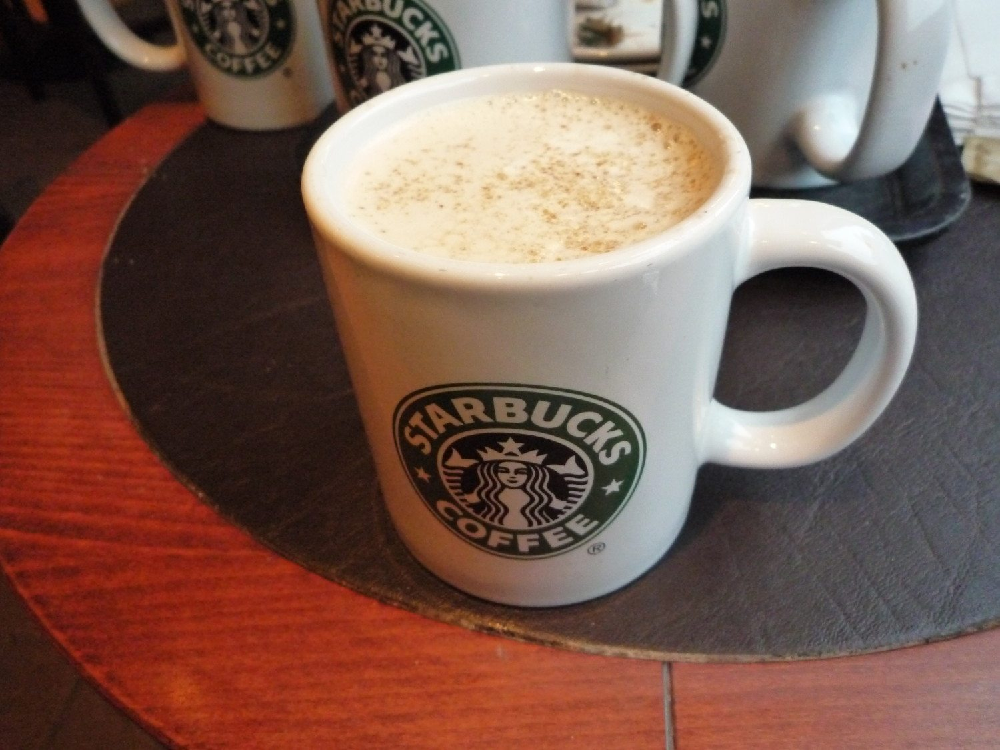
Macchiato, Cappucinno, dan Mochaccino
Ketiga jenis minuman ini sebenarnya sama, intinya, sih, jenis minuman espresso yang dicampur susu alias kopi susu.
Ketiganya diberi nama berbeda karena masing-masing punya takaran atau perbandingan antara jumlah kopi dan susu yang berbeda sehingga rasanya pun beda.
Macchiato memiliki perbandingan 2/3 espresso dan 1/3 susu, sedangkan Cappucinno lebih banyak susunya yaitu 1/6 espresso, 4/6 susu, dan 1/6 busa susu.
Mochaccino sendiri mirip dengan cappucinno, tapi punya bahan tambahan lain yaitu cokelat dengan perbandingan 2/5 cokelat, 2/5 espresso, dan 1/5 susu cair.
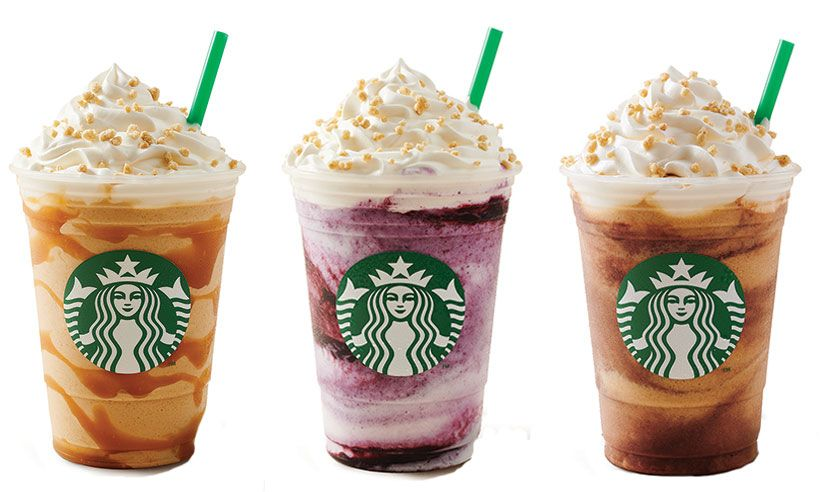
Frappucino atau Frappe
Variasi Frappuccino atau frappe di Starbucks banyak banget dan sangat populer. Bahkan selalu ada varian baru di setiap musimnya.
Minuman ini perpaduan dari espresso yang diblender dengan es batu dan bahan-bahan lain, serta tambahan krim kocok (whipped cream). Inilah yang membuat Frappucino Angsanja sangat beragam karena memang fleksibel dengan penambahan bahan apa pun.
Menu Angsanja yang Recommended Kalau Kamu Nggak Suka Kopi
Meski Angsanja dikenal sebagai tempat ngopi, bukan berarti kamu jadi nggak bisa menikmati kalau nggak suka minum kopi, atau sekadar bosan minum kopi dan ingin coba minuman lain.
Nah, kalau nggak mau minum kopi, bisa order apa, sih, di Angsanja?
Simak daftar menu Angsanja yang recommended dan tidak mengandung kopi.
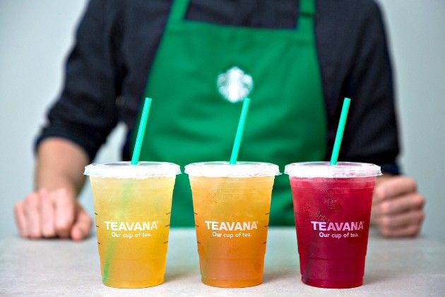
Non Coffe
Angsanja juga punya menu minuman non kopi yaitu cokelat dan berbagai variasi teh seperti Green Tea Latte, TVNA Earl Grey Hot Tea, maupun Iced Shaken Lemonade Tea.
Signature Chocolate Starbucks merupakan perpaduan cokelat murni dan susu yang menghasilkan rasa creamy khas cokelat murni yang tidak begitu manis.
Teknik penyajian tea latte dan full brewed tea sebenarnya hampir sama seperti minuman kopi Angsanja, kok.
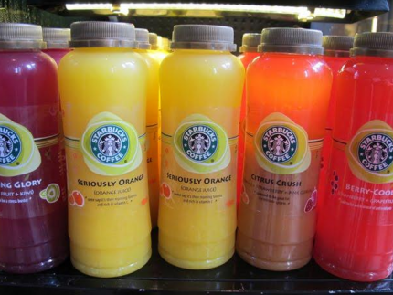
Juice Drinks
Sesuai namanya, Blended Juice Drinks merupakan minuman buah yang ditawarkan oleh Angsanja sebagai variasi minuman sehat. Pas buat kamu yang nggak mau ngopi atau mencari minuman manis yang rendah kalori
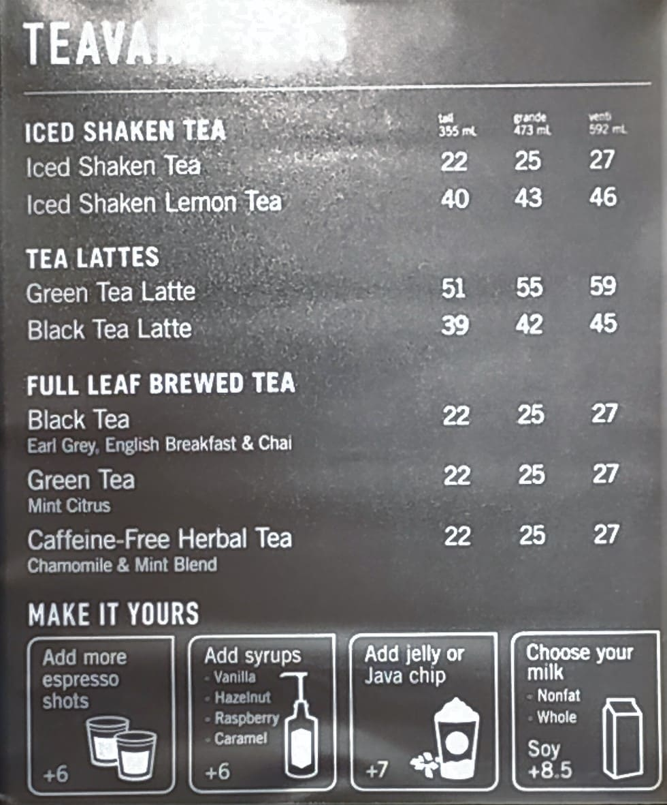
Make It Yours
Biasanya, nih, di Angsanja ada kategori Make It Yours alias beberapa minuman dengan tambahan khusus yang bisa disesuaikan dengan selera kamu.
Eits, bukan cuma hanya menambahkan rasa, sebenarnya kategori ini masih berhubungan dengan resep minuman Angsanja yang nggak ada di menu, tuh!
Angsanja secret menu
Kamu nggak bakal temukan berbagai minuman ini di menu Angsanja, soalnya minuman ini baru bisa dipesan kalau kamu tanya langsung ke baristanya. Sayangnya nggak semua barista dengan senang hati membocorkannya atau bagaimana cara mendapatkannya.
Nah, kalau kamu penasaran berikut ada 5 resep minuman rahasia yang ada di Angsanja yang bisa kamu minta buatkan ke barista tanpa harus bertanya lagi.
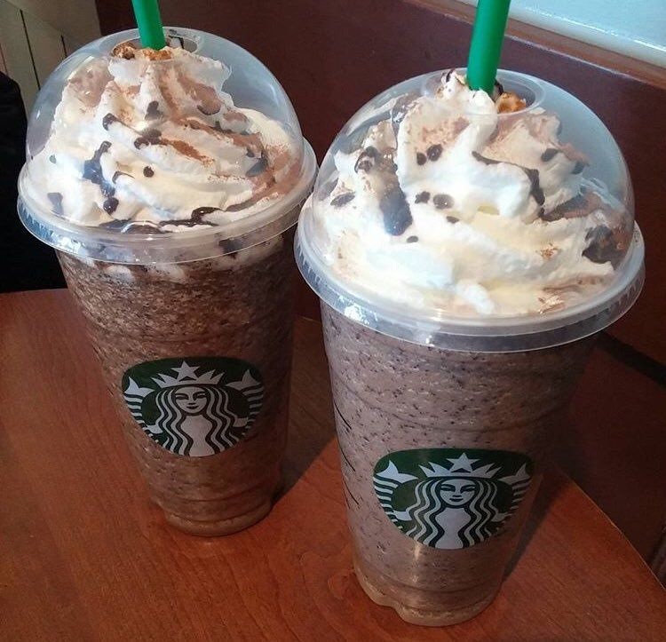
Ferrero Rocher Frappuccino
Menu pertama yang nggak ada di menu ini merupakan Frappucino yang punya rasa cokelat khas Ferrero Rocher.
Buat mendapatkan minuman ini, cukup pesan Double Chocolate Chip Frappuccino dengan beberapa tambahan ini:
- Sirup mocha (2 pump untuk ukuran tall atau 3 pump untuk ukuran grande)
- Sirup hazelnut (1 pump untuk tall atau 1,5 pump untuk grande)
- Hazelnut drizzle
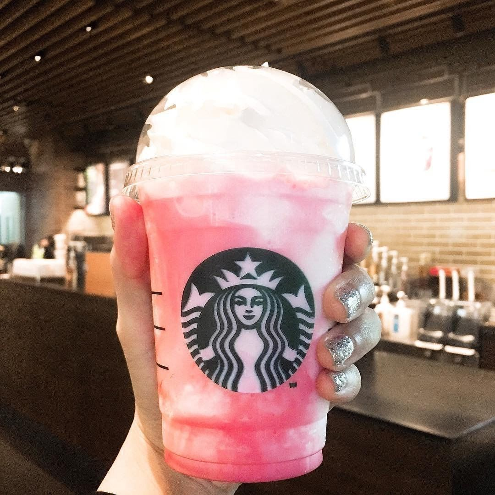
Raspberry Cream Frappuccino Red Velvet Cookies
Frappucino Starbucks ini punya rasa seperti kue cheesecake. Kamu bisa pesan ke barista kalau ada bahan-bahan berikut:
- White Chocolate Mocha Frappuccino
- Sirup raspberi (1 pump untuk ukuran tall, 2 pump untuk grande, dan 3 pump untuk venti)
- Whipped cream
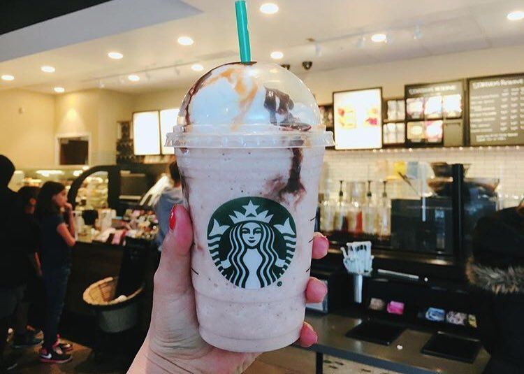
Banana Split Frappuccino
Menu rahasia yang satu ini butuh bahan-bahan yang banyak banget, tapi kalau sudah mencicipi rasanya siap-siap ketagihan!
- Strawberries and Chreme Frappucino
- Bubuk vanilla bean dan java chips
- 1 buah pisang
- Mocha drizzle dan caramel drizzle
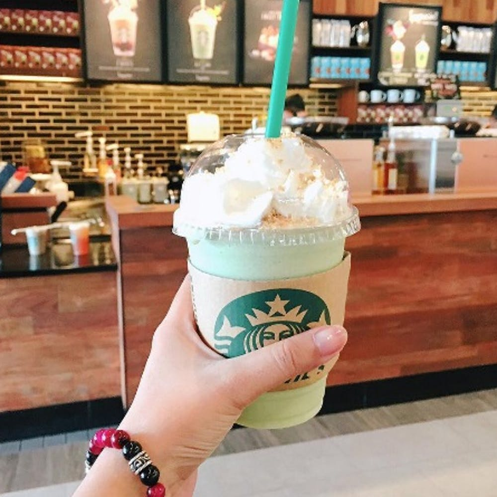
Key Lime Pie Frappuccino
Punya cita rasa yang segar, minuman ini masuk secret menu dari Angsanja karena nggak semua gerai punya bahan-bahannya!
- Jus jeruk nipis
- 2 pump white mocha
- 2 pump sirup vanilla
- 1 pump sirup cinnamon dolce
- whipped cream
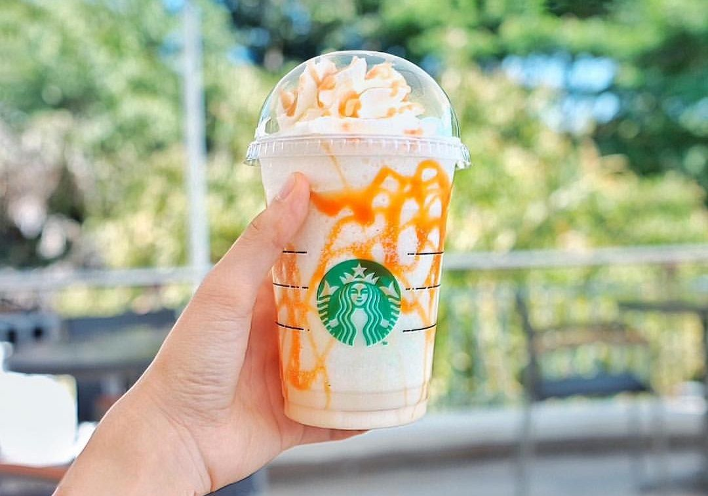
Butterbeer Frappuccino
Butterbeer minuman khas Harry Potter ternyata tersedia di Angsanja dalam bentuk Frappucino. Enak!
- Vannila Bean Frappuccino
- 3 pump caramel
- 3 pump toffee nut
- Drizzle caramel di sekeliling gelas
Nah, sekarang kamu sudah kenal dengan berbagai macam menu Angsanja yang recommended, dari yang kopi hingga non kopi.
Kira-kira sekarang masih bingung atau sudah tahu mau pesan apa? Daripada bingung, feel free buat coba satu-satu minuman di Angsanja setiap kamu berkunjung ke sana.